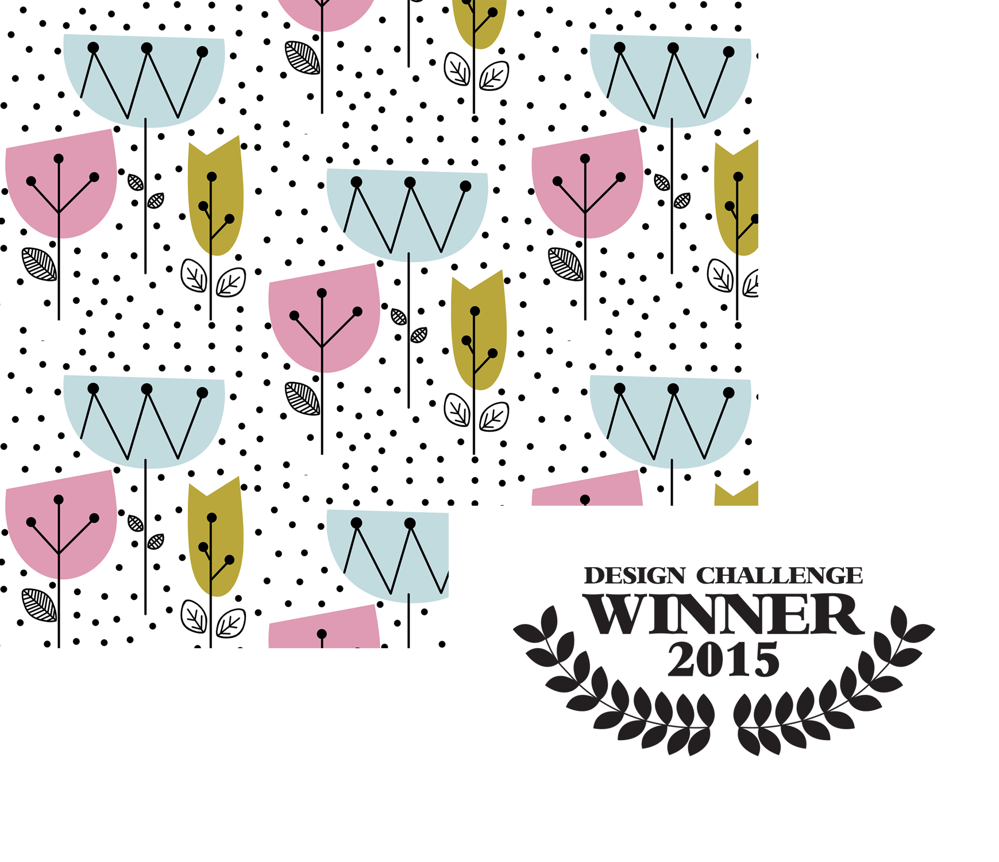

STORY
Spoonflower is an online digital printing company that combines a design platform with e-commerce while also being a factory in the US and Germany.
I was introduced to the company as a freelance designer in 2008, then joined as an operations team member in 2013.
During my time there, I explored various positions within the company as Customer Service Associate and Company Buyer. I really enjoyed, and took advantage of the "Startup Life" and worked on many collaborations with designers, marketing and clients. I used my interpersonal, empathy and industry knowledge to help the company grow, while also having a creative outlet as an Independent Designer, Marketing helper, Brand Ambassador and frequent Blog Collaborator.
You can learn more about my tasks within the Customer Service and Buying in my Resume, this page is to feature my design and web content work.

DESIGN
During my time in Spoonflower I created countless designs for the website, office and marketing collateral.
I also entered, and always made Top 5 Employee Design Challenges. Winning in 2015, my prize was a custom-upholstered chair made with my Winning Design "Mod Flowers".
FUNNY VIDEOS
If I was good at design and content creation, I think I was better at making a fool out of myself and collaborating to create funny, silly, improptu videos.
Often, I'd be asked in the middle of a crazy-busy day to participate in videos, sometimes dancing, sometimes acting, sometimes coming up with rhymes.
If anything, you can at least see I can come up with poems on the fly.
WEB CONTENT
Over the years, I created over a dozen content pages for Spoonflower as a collaborator. From instructional blog posts, to in-person design classes.
Most of my content was instructional, to help clients learn not only how to use the Spoonflower platform, but also teach that design is fun.